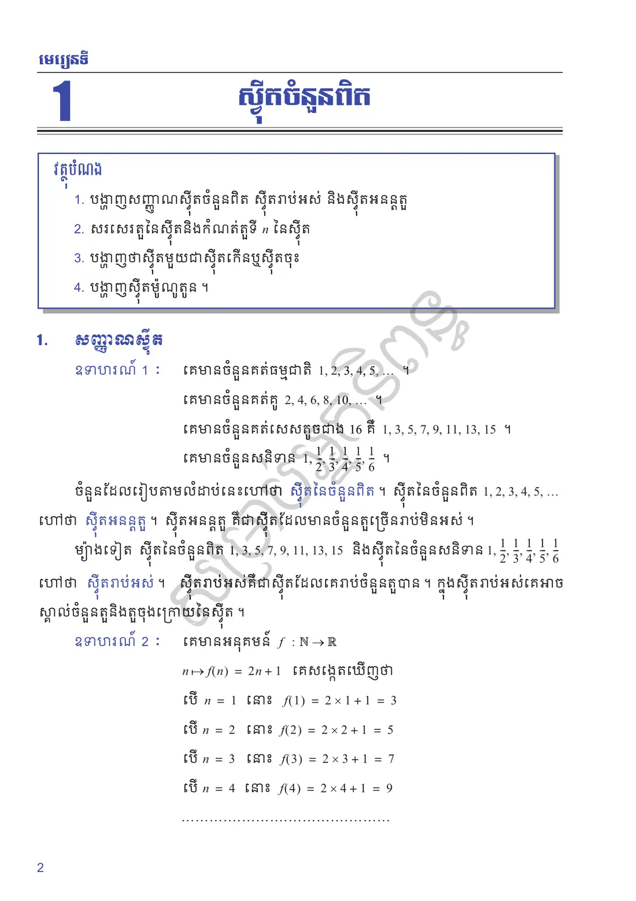
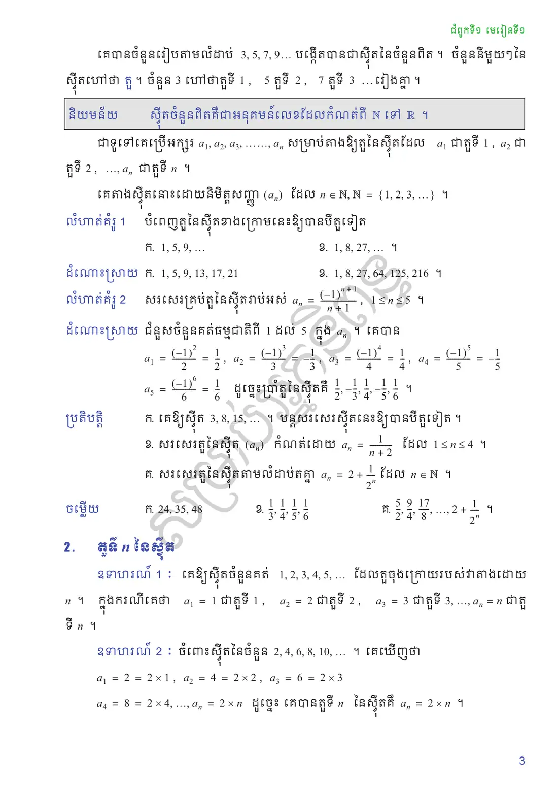
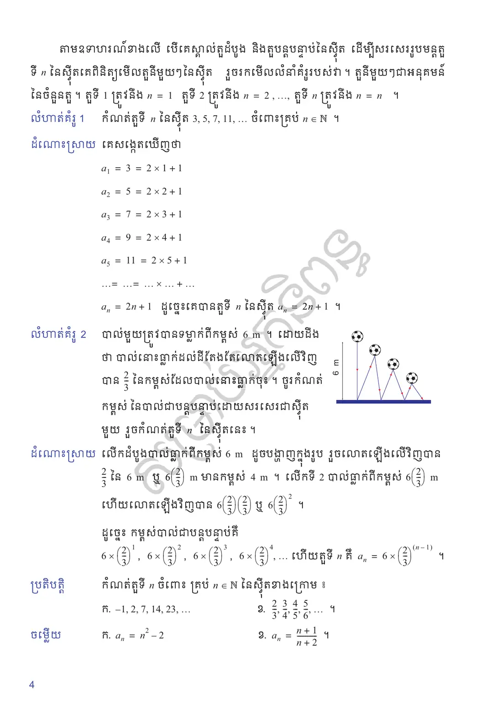
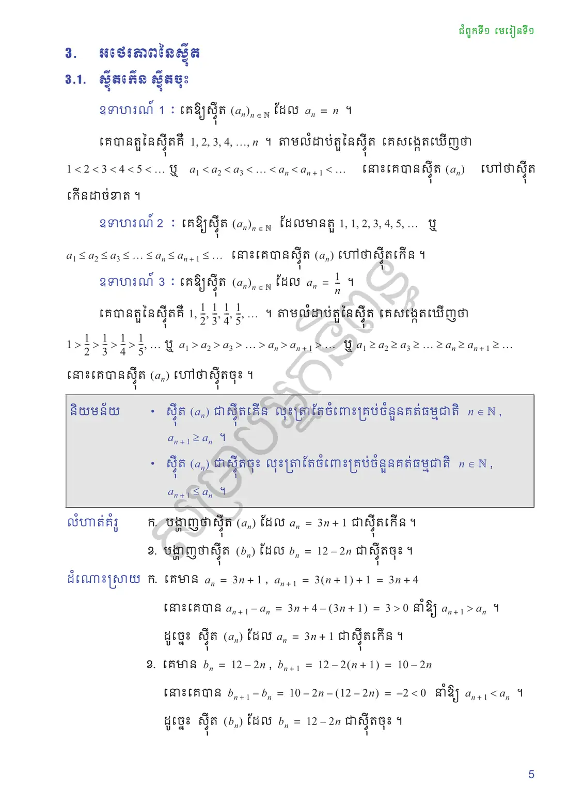
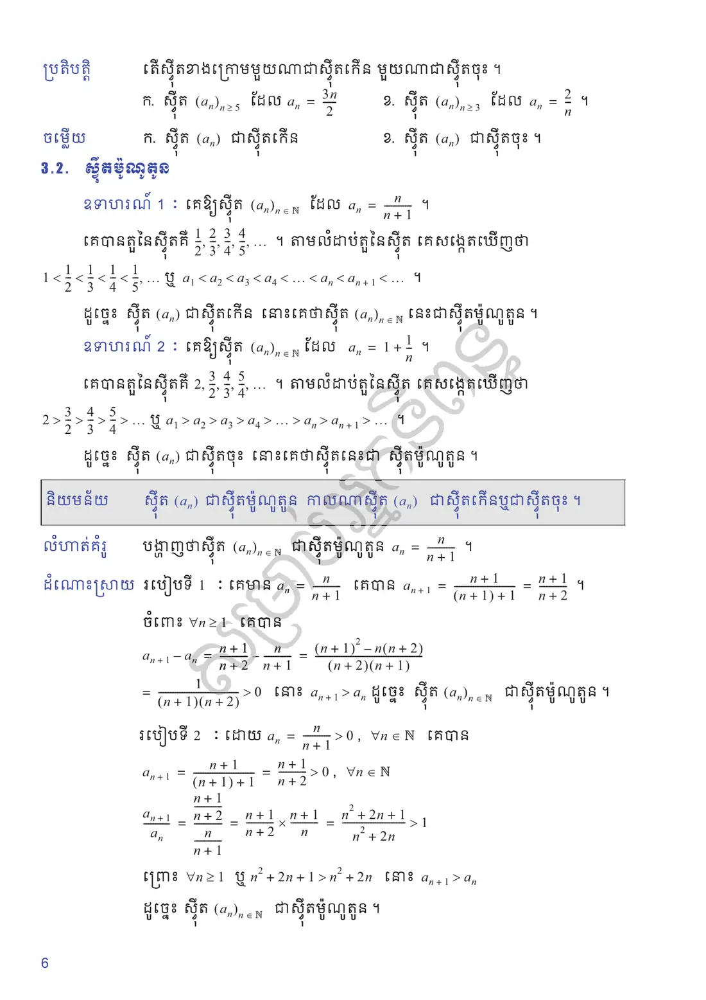
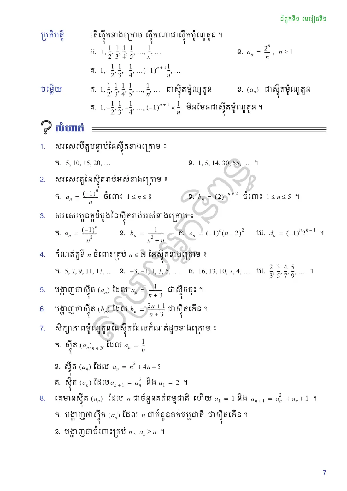

បង្ហាញសញ្ញាណស៊ីតចំនួនពិត ស៊ីតរាប់អស់ និងស៊ីតអនន្តតួ
សរសេរតួនៃស៊ីតនិងកំណត់តួទី \(n\) នៃស៊ីត
បង្ហាញថាស៊ីតមួយជាស៊ីតកើនឬស៊ីតចុះ
បង្ហាញស៊ីតម៉ូណូតូន ។
សញ្ញាណស៊ីត
គេមានចំនួនគត់ធម្មជាតិ \(1, 2, 3, 4, 5, \ldots\) ។
គេមានចំនួនគត់គូ \(2, 4, 6, 8, 10, \ldots\) ។
គេមានចំនួនគត់សេសតូចជាង \(16\) គឺ \(1, 3, 5, 7, 9, 11, 13, 15\) ។
គេមានចំនួនសនិទាន \(1, \frac{1}{2}, \frac{1}{3}, \frac{1}{4}, \frac{1}{5}, \frac{1}{6}\) ។
ចំនួនដែលរៀបតាមលំដាប់នេះហៅថា ស៊ីតនៃចំនួនពិត ។ ស៊ីតនៃចំនួនពិត \(1, 2, 3, 4, 5, \ldots\) ហៅថា ស៊ីតអនន្តតួ ។ ស៊ីតអនន្តតួ គឺជាស៊ីតដែលមានចំនួនតួច្រើនរាប់មិនអស់ ។
ម្យ៉ាងទៀត ស៊ីតនៃចំនួនពិត \(1, 3, 5, 7, 9, 11, 13, 15\) និងស៊ីតនៃចំនួនសនិទាន \(1, \frac{1}{2}, \frac{1}{3}, \frac{1}{4}, \frac{1}{5}, \frac{1}{6}\) ហៅថា ស៊ីតរាប់អស់ ។ ស៊ីតរាប់អស់គឺជាស៊ីតដែលគេរាប់ចំនួនតួបាន ។ ក្នុងស៊ីតរាប់អស់គេអាចស្គាល់ចំនួនតួនិងតួចុងក្រោយនៃស៊ីត ។
គេមានអនុគមន៍ \(f : \mathbb{N} \to \mathbb{R}\), \(n \mapsto f(n) = 2n + 1\) គេសង្កេតឃើញថា
ស៊ីតចំនួនពិតគឺជាអនុគមន៍លេខដែលកំណត់ពី \(\mathbb{N}\) ទៅ \(\mathbb{R}\) ។
ជាទូទៅគេប្រើអក្សរ \(a_1, a_2, a_3, \ldots, a_n\) សម្រាប់តាងឱ្យតួនៃស៊ីតដែល \(a_1\) ជាតួទី \(1\), \(a_2\) ជាតួទី \(2\), \(\ldots\), \(a_n\) ជាតួទី \(n\) ។
គេតាងស៊ីតនោះដោយនិមិត្តសញ្ញា \((a_n)\) ដែល \(n \in \mathbb{N}\), \(\mathbb{N} = \{1, 2, 3, \ldots\}\) ។
បំពេញតួនៃស៊ីតខាងក្រោមនេះឱ្យបានបីតួទៀត
\(1, 5, 9, \ldots\)
\(1, 8, 27, \ldots\)
\(1, 5, 9, 13, 17, 21\)
\(1, 8, 27, 64, 125, 216\) ។
សរសេរគ្រប់តួនៃស៊ីតរាប់អស់ \(a_n = \dfrac{(-1)^{n+1}}{n+1}\), \(1 \le n \le 5\) ។
ជំនួសចំនួនគត់ធម្មជាតិពី \(1\) ដល់ \(5\) ក្នុង \(a_n\) ។ គេបាន
គេឱ្យស៊ីត \(3, 8, 15, \ldots\) ។ បន្តសរសេរស៊ីតនេះឱ្យបានបីតួទៀត ។
សរសេរតួនៃស៊ីត \((a_n)\) កំណត់ដោយ \(a_n = \dfrac{1}{n+2}\) ដែល \(1 \le n \le 4\) ។
សរសេរតួនៃស៊ីតតាមលំដាប់តគ្នា \(a_n = 2 + \dfrac{1}{2^n}\) ដែល \(n \in \mathbb{N}\) ។
មើលចម្លើយ
\(24, 35, 48\)
\(\frac{1}{3}, \frac{1}{4}, \frac{1}{5}, \frac{1}{6}\)
\(\frac{5}{2}, \frac{9}{4}, \frac{17}{8}, \ldots, 2 + \frac{1}{2^n}\) ។
តួទី \(n\) នៃស៊ីត
គេឱ្យស៊ីតចំនួនគត់ \(1, 2, 3, 4, 5, \ldots\) ដែលតួចុងក្រោយរបស់វាតាងដោយ \(n\) ។ ក្នុងករណីគេថា \(a_1 = 1\) ជាតួទី \(1\), \(a_2 = 2\) ជាតួទី \(2\), \(a_3 = 3\) ជាតួទី \(3\), \(\ldots\), \(a_n = n\) ជាតួទី \(n\) ។
ចំពោះស៊ីតនៃចំនួន \(2, 4, 6, 8, 10, \ldots\) ។ គេឃើញថា
តាមឧទាហរណ៍ខាងលើ បើគេស្គាល់តួដំបូង និងតួបន្តបន្ទាប់នៃស៊ីត ដើម្បីសរសេររូបមន្តតួទី \(n\) នៃស៊ីតគេពិនិត្យមើលតួនីមួយៗនៃស៊ីត រួចរកមើលលំនាំគំរូរបស់វា ។ តួនីមួយៗជាអនុគមន៍នៃចំនួនតួ ។ តួទី \(1\) ត្រូវនឹង \(n = 1\) តួទី \(2\) ត្រូវនឹង \(n = 2\), \(\ldots\), តួទី \(n\) ត្រូវនឹង \(n = n\) ។
កំណត់តួទី \(n\) នៃស៊ីត \(3, 5, 7, 11, \ldots\) ចំពោះគ្រប់ \(n \in \mathbb{N}\) ។
គេសង្កេតឃើញថា
បាល់មួយត្រូវបានទម្លាក់ពីកម្ពស់ \(6\text{ m}\) ។ ដោយដឹងថា បាល់នោះធ្លាក់ដល់ដីតែងតែលោតឡើងលើវិញបាន \(\frac{2}{3}\) នៃកម្ពស់ដែលបាល់នោះធ្លាក់ចុះ ។ ចូរកំណត់កម្ពស់ នៃបាល់ជាបន្តបន្ទាប់ដោយសរសេរជាស៊ីតមួយ រួចកំណត់តួទី \(n\) នៃស៊ីតនេះ ។
![](data:image/svg+xml;charset=utf-8,%3C%3Fxml version=%221.0%22 encoding=%22UTF-8%22%3F%3E%3Csvg xmlns=%22http://www.w3.org/2000/svg%22 xmlns:xlink=%22http://www.w3.org/1999/xlink%22 width=%22143.47%22 height=%22114.26%22 viewBox=%220 0 143.47 114.26%22%3E%3Cdefs%3E%3Cg%3E%3Cg id=%22glyph-0-0%22%3E%3Cpath d=%22M -3.25 -1.31 L -3.48 -1.31 C -6 -1.31 -6.34 -2.53 -6.34 -3.04 C -6.34 -3.28 -6.29 -3.68 -5.95 -3.90 C -5.95 -3.76 -5.95 -3.37 -5.51 -3.37 C -5.20 -3.37 -5.04 -3.60 -5.04 -3.82 C -5.04 -3.98 -5.14 -4.28 -5.53 -4.28 C -6.12 -4.28 -6.59 -3.84 -6.59 -3.01 C -6.59 -1.75 -5.31 -0.42 -3.12 -0.42 C -0.48 -0.42 0.21 -1.56 0.21 -2.48 C 0.21 -3.59 -0.71 -4.53 -2.01 -4.53 C -3.28 -4.53 -4.23 -3.64 -4.23 -2.54 C -4.23 -1.87 -3.71 -1.5 -3.25 -1.31 Z M -0.06 -2.48 C -0.06 -1.85 -0.65 -1.56 -0.79 -1.5 C -1.26 -1.32 -2.06 -1.32 -2.23 -1.32 C -3.01 -1.32 -4 -1.64 -4 -2.53 C -4 -2.68 -4 -3.15 -3.39 -3.45 C -3.01 -3.64 -2.51 -3.64 -2.03 -3.64 C -1.56 -3.64 -1.06 -3.64 -0.70 -3.46 C -0.10 -3.17 -0.06 -2.71 -0.06 -2.48 Z M -0.06 -2.48 %22/%3E%3C/g%3E%3Cg id=%22glyph-1-0%22%3E%3Cpath d=%22M -3.39 -4.57 L 0 -4.57 L 0 -3.84 L -3.43 -3.84 C -4.33 -3.84 -4.78 -3.48 -4.78 -2.78 C -4.78 -2.34 -4.58 -2.00 -4.20 -1.78 C -3.81 -1.55 -3.54 -1.43 -3.39 -1.43 L 0 -1.43 L 0 -0.70 L -5.51 -0.70 L -5.51 -1.43 L -4.56 -1.43 C -5.19 -1.87 -5.51 -2.37 -5.51 -2.93 C -5.51 -3.72 -5.14 -4.23 -4.39 -4.45 L -4.56 -4.57 C -5.19 -5.01 -5.51 -5.51 -5.51 -6.07 C -5.51 -7.17 -4.80 -7.71 -3.39 -7.71 L 0 -7.71 L 0 -7 L -3.43 -7 C -4.33 -7 -4.78 -6.64 -4.78 -5.93 C -4.78 -5.48 -4.58 -5.14 -4.20 -4.92 C -3.81 -4.69 -3.54 -4.57 -3.39 -4.57 Z M -3.39 -4.57 %22/%3E%3C/g%3E%3C/g%3E%3CclipPath id=%22clip-0%22%3E%3Cpath clip-rule=%22nonzero%22 d=%22M 25 43 L 57 43 L 57 113.52 L 25 113.52 Z M 25 43 %22/%3E%3C/clipPath%3E%3CclipPath id=%22clip-1%22%3E%3Cpath clip-rule=%22nonzero%22 d=%22M 66 63 L 93 63 L 93 113.52 L 66 113.52 Z M 66 63 %22/%3E%3C/clipPath%3E%3CclipPath id=%22clip-2%22%3E%3Cpath clip-rule=%22nonzero%22 d=%22M 97 77 L 119 77 L 119 113.52 L 97 113.52 Z M 97 77 %22/%3E%3C/clipPath%3E%3C/defs%3E%3Cpath fill-rule=%22nonzero%22 fill=%22rgb(0%25, 0%25, 59.99%25)%22 fill-opacity=%221%22 d=%22M 17.40 110.55 L 17.40 108.69 L 139.77 108.69 L 139.77 110.55 Z M 17.40 110.55 %22/%3E%3Cpath fill=%22none%22 stroke-width=%220.79%22 stroke-linecap=%22butt%22 stroke-linejoin=%22miter%22 stroke=%22rgb(0%25, 0%25, 0%25)%22 stroke-opacity=%221%22 stroke-miterlimit=%2210%22 d=%22M -4.67 0.00 L -4.67 93.54 %22 transform=%22matrix(0.99, 0, 0, -0.99, 22.04, 108.69)%22/%3E%3Cg fill=%22rgb(0%25, 0%25, 0%25)%22 fill-opacity=%221%22%3E%3Cuse xlink:href=%22%23glyph-0-0%22 x=%2212.84%22 y=%2270.33%22/%3E%3C/g%3E%3Cg fill=%22rgb(0%25, 0%25, 0%25)%22 fill-opacity=%221%22%3E%3Cuse xlink:href=%22%23glyph-1-0%22 x=%2212.84%22 y=%2262.48%22/%3E%3C/g%3E%3Cpath fill=%22none%22 stroke-width=%220.39%22 stroke-linecap=%22butt%22 stroke-linejoin=%22miter%22 stroke=%22rgb(100%25, 0%25, 0%25)%22 stroke-opacity=%221%22 stroke-miterlimit=%2210%22 d=%22M 9.35 93.54 L 9.35 1.99 %22 transform=%22matrix(0.99, 0, 0, -0.99, 22.04, 108.69)%22/%3E%3Cpath fill-rule=%22nonzero%22 fill=%22rgb(100%25, 0%25, 0%25)%22 fill-opacity=%221%22 d=%22M 31.34 108.69 L 32.92 105.52 L 31.34 106.71 L 29.75 105.52 %22/%3E%3Cg clip-path=%22url(%23clip-0)%22%3E%3Cpath fill=%22none%22 stroke-width=%220.39%22 stroke-linecap=%22butt%22 stroke-linejoin=%22miter%22 stroke=%22rgb(100%25, 0%25, 0%25)%22 stroke-opacity=%221%22 stroke-miterlimit=%2210%22 d=%22M 9.35 0.00 L 29.00 60.46 %22 transform=%22matrix(0.99, 0, 0, -0.99, 22.04, 108.69)%22/%3E%3C/g%3E%3Cpath fill-rule=%22nonzero%22 fill=%22rgb(100%25, 0%25, 0%25)%22 fill-opacity=%221%22 d=%22M 51.48 46.73 L 48.99 49.25 L 50.86 48.61 L 52.00 50.23 %22/%3E%3Cpath fill=%22none%22 stroke-width=%220.39%22 stroke-linecap=%22butt%22 stroke-linejoin=%22miter%22 stroke=%22rgb(100%25, 0%25, 0%25)%22 stroke-opacity=%221%22 stroke-miterlimit=%2210%22 d=%22M 29.62 62.36 L 49.27 1.89 %22 transform=%22matrix(0.99, 0, 0, -0.99, 22.04, 108.69)%22/%3E%3Cpath fill-rule=%22nonzero%22 fill=%22rgb(100%25, 0%25, 0%25)%22 fill-opacity=%221%22 d=%22M 71.61 108.69 L 72.14 105.19 L 71.00 106.81 L 69.13 106.17 %22/%3E%3Cg clip-path=%22url(%23clip-1)%22%3E%3Cpath fill=%22none%22 stroke-width=%220.39%22 stroke-linecap=%22butt%22 stroke-linejoin=%22miter%22 stroke=%22rgb(100%25, 0%25, 0%25)%22 stroke-opacity=%221%22 stroke-miterlimit=%2210%22 d=%22M 49.88 0.00 L 64.78 39.76 %22 transform=%22matrix(0.99, 0, 0, -0.99, 22.04, 108.69)%22/%3E%3C/g%3E%3Cpath fill-rule=%22nonzero%22 fill=%22rgb(100%25, 0%25, 0%25)%22 fill-opacity=%221%22 d=%22M 87.10 67.33 L 84.51 69.74 L 86.41 69.19 L 87.48 70.85 %22/%3E%3Cpath fill=%22none%22 stroke-width=%220.39%22 stroke-linecap=%22butt%22 stroke-linejoin=%22miter%22 stroke=%22rgb(100%25, 0%25, 0%25)%22 stroke-opacity=%221%22 stroke-miterlimit=%2210%22 d=%22M 65.48 41.62 L 80.37 1.86 %22 transform=%22matrix(0.99, 0, 0, -0.99, 22.04, 108.69)%22/%3E%3Cpath fill-rule=%22nonzero%22 fill=%22rgb(100%25, 0%25, 0%25)%22 fill-opacity=%221%22 d=%22M 102.59 108.69 L 102.97 105.17 L 101.90 106.84 L 100.00 106.28 %22/%3E%3Cg clip-path=%22url(%23clip-2)%22%3E%3Cpath fill=%22none%22 stroke-width=%220.39%22 stroke-linecap=%22butt%22 stroke-linejoin=%22miter%22 stroke=%22rgb(100%25, 0%25, 0%25)%22 stroke-opacity=%221%22 stroke-miterlimit=%2210%22 d=%22M 81.07 0.00 L 91.25 25.89 %22 transform=%22matrix(0.99, 0, 0, -0.99, 22.04, 108.69)%22/%3E%3C/g%3E%3Cpath fill-rule=%22nonzero%22 fill=%22rgb(100%25, 0%25, 0%25)%22 fill-opacity=%221%22 d=%22M 113.44 81.12 L 110.80 83.49 L 112.71 82.96 L 113.75 84.64 %22/%3E%3Cpath fill=%22none%22 stroke-width=%220.39%22 stroke-linecap=%22butt%22 stroke-linejoin=%22miter%22 stroke=%22rgb(100%25, 0%25, 0%25)%22 stroke-opacity=%221%22 stroke-miterlimit=%2210%22 d=%22M 91.98 27.75 L 102.17 1.85 %22 transform=%22matrix(0.99, 0, 0, -0.99, 22.04, 108.69)%22/%3E%3Cpath fill-rule=%22nonzero%22 fill=%22rgb(100%25, 0%25, 0%25)%22 fill-opacity=%221%22 d=%22M 124.28 108.69 L 124.60 105.16 L 123.56 106.85 L 121.65 106.32 %22/%3E%3Cpath fill-rule=%22nonzero%22 fill=%22rgb(100%25, 100%25, 100%25)%22 fill-opacity=%221%22 stroke-width=%220.79%22 stroke-linecap=%22butt%22 stroke-linejoin=%22miter%22 stroke=%22rgb(0%25, 0%25, 0%25)%22 stroke-opacity=%221%22 stroke-miterlimit=%2210%22 d=%22M 15.59 99.77 C 15.59 103.22 12.79 106.01 9.35 106.01 C 5.91 106.01 3.11 103.22 3.11 99.77 C 3.11 96.33 5.91 93.54 9.35 93.54 C 12.79 93.54 15.59 96.33 15.59 99.77 Z M 15.59 99.77 %22 transform=%22matrix(0.99, 0, 0, -0.99, 22.04, 108.69)%22/%3E%3Cpath fill-rule=%22nonzero%22 fill=%22rgb(100%25, 100%25, 100%25)%22 fill-opacity=%221%22 stroke-width=%220.79%22 stroke-linecap=%22butt%22 stroke-linejoin=%22miter%22 stroke=%22rgb(0%25, 0%25, 0%25)%22 stroke-opacity=%221%22 stroke-miterlimit=%2210%22 d=%22M 35.85 68.59 C 35.85 72.04 33.06 74.83 29.62 74.83 C 26.17 74.83 23.38 72.04 23.38 68.59 C 23.38 65.15 26.17 62.36 29.62 62.36 C 33.06 62.36 35.85 65.15 35.85 68.59 Z M 35.85 68.59 %22 transform=%22matrix(0.99, 0, 0, -0.99, 22.04, 108.69)%22/%3E%3Cpath fill-rule=%22nonzero%22 fill=%22rgb(100%25, 100%25, 100%25)%22 fill-opacity=%221%22 stroke-width=%220.79%22 stroke-linecap=%22butt%22 stroke-linejoin=%22miter%22 stroke=%22rgb(0%25, 0%25, 0%25)%22 stroke-opacity=%221%22 stroke-miterlimit=%2210%22 d=%22M 71.71 47.86 C 71.71 51.30 68.92 54.09 65.48 54.09 C 62.03 54.09 59.24 51.30 59.24 47.86 C 59.24 44.41 62.03 41.62 65.48 41.62 C 68.92 41.62 71.71 44.41 71.71 47.86 Z M 71.71 47.86 %22 transform=%22matrix(0.99, 0, 0, -0.99, 22.04, 108.69)%22/%3E%3Cpath fill-rule=%22nonzero%22 fill=%22rgb(100%25, 100%25, 100%25)%22 fill-opacity=%221%22 stroke-width=%220.79%22 stroke-linecap=%22butt%22 stroke-linejoin=%22miter%22 stroke=%22rgb(0%25, 0%25, 0%25)%22 stroke-opacity=%221%22 stroke-miterlimit=%2210%22 d=%22M 98.22 33.98 C 98.22 37.43 95.42 40.22 91.98 40.22 C 88.54 40.22 85.74 37.43 85.74 33.98 C 85.74 30.54 88.54 27.75 91.98 27.75 C 95.42 27.75 98.22 30.54 98.22 33.98 Z M 98.22 33.98 %22 transform=%22matrix(0.99, 0, 0, -0.99, 22.04, 108.69)%22/%3E%3C/svg%3E%0A)
លើកដំបូងបាល់ធ្លាក់ពីកម្ពស់ \(6\text{ m}\) ដូចបង្ហាញក្នុងរូប រួចលោតឡើងលើវិញបាន \(\frac{2}{3}\) នៃ \(6\text{ m}\) ឬ \(6\left(\frac{2}{3}\right)\text{ m}\) មានកម្ពស់ \(4\text{ m}\) ។ លើកទី \(2\) បាល់ធ្លាក់ពីកម្ពស់ \(6\left(\frac{2}{3}\right)\text{ m}\) ហើយលោតឡើងលើវិញបាន \(6\left(\frac{2}{3}\right)\left(\frac{2}{3}\right)\) ឬ \(6\left(\frac{2}{3}\right)^2\) ។
ដូច្នេះ កម្ពស់បាល់ជាបន្តបន្ទាប់គឺ
កំណត់តួទី \(n\) ចំពោះ គ្រប់ \(n \in \mathbb{N}\) នៃស៊ីតខាងក្រោម ៖
\(-1, 2, 7, 14, 23, \ldots\)
\(\frac{2}{3}, \frac{3}{4}, \frac{4}{5}, \frac{5}{6}, \ldots\) ។
មើលចម្លើយ
\(a_n = n^2 - 2\)
\(a_n = \dfrac{n+1}{n+2}\) ។
អថេរភាពនៃស៊ីត
ស៊ីតកើន ស៊ីតចុះ
គេឱ្យស៊ីត \((a_n)_{n \in \mathbb{N}}\) ដែល \(a_n = n\) ។
គេបានតួនៃស៊ីតគឺ \(1, 2, 3, 4, \ldots, n\) ។ តាមលំដាប់តួនៃស៊ីត គេសង្កេតឃើញថា \(1 < 2 < 3 < 4 < 5 < \ldots\) ឬ \(a_1 < a_2 < a_3 < \ldots < a_n < a_{n+1} < \ldots\) នោះគេបានស៊ីត \((a_n)\) ហៅថាស៊ីតកើនដាច់ខាត ។
គេឱ្យស៊ីត \((a_n)_{n \in \mathbb{N}}\) ដែលមានតួ \(1, 1, 2, 3, 4, 5, \ldots\) ឬ \(a_1 \le a_2 \le a_3 \le \ldots \le a_n \le a_{n+1} \le \ldots\) នោះគេបានស៊ីត \((a_n)\) ហៅថាស៊ីតកើន ។
គេឱ្យស៊ីត \((a_n)_{n \in \mathbb{N}}\) ដែល \(a_n = \dfrac{1}{n}\) ។
គេបានតួនៃស៊ីតគឺ \(1, \frac{1}{2}, \frac{1}{3}, \frac{1}{4}, \frac{1}{5}, \ldots\) ។ តាមលំដាប់តួនៃស៊ីត គេសង្កេតឃើញថា \(1 > \frac{1}{2} > \frac{1}{3} > \frac{1}{4} > \frac{1}{5}, \ldots\) ឬ \(a_1 > a_2 > a_3 > \ldots > a_n > a_{n+1} > \ldots\) ឬ \(a_1 \ge a_2 \ge a_3 \ge \ldots \ge a_n \ge a_{n+1} \ge \ldots\) នោះគេបានស៊ីត \((a_n)\) ហៅថាស៊ីតចុះ ។
ស៊ីត \((a_n)\) ជាស៊ីតកើន លុះត្រាតែចំពោះគ្រប់ចំនួនគត់ធម្មជាតិ \(n \in \mathbb{N}\), \(a_{n+1} \ge a_n\) ។
ស៊ីត \((a_n)\) ជាស៊ីតចុះ លុះត្រាតែចំពោះគ្រប់ចំនួនគត់ធម្មជាតិ \(n \in \mathbb{N}\), \(a_{n+1} \le a_n\) ។
បង្ហាញថាស៊ីត \((a_n)\) ដែល \(a_n = 3n + 1\) ជាស៊ីតកើន ។
បង្ហាញថាស៊ីត \((b_n)\) ដែល \(b_n = 12 - 2n\) ជាស៊ីតចុះ ។
គេមាន \(a_n = 3n + 1\), \(a_{n+1} = 3(n+1) + 1 = 3n + 4\)
នោះគេបាន \(a_{n+1} - a_n = 3n + 4 - (3n + 1) = 3 > 0\) នាំឱ្យ \(a_{n+1} > a_n\) ។
ដូច្នេះ ស៊ីត \((a_n)\) ដែល \(a_n = 3n + 1\) ជាស៊ីតកើន ។គេមាន \(b_n = 12 - 2n\), \(b_{n+1} = 12 - 2(n+1) = 10 - 2n\)
នោះគេបាន \(b_{n+1} - b_n = 10 - 2n - (12 - 2n) = -2 < 0\) នាំឱ្យ \(b_{n+1} < b_n\) ។
ដូច្នេះ ស៊ីត \((b_n)\) ដែល \(b_n = 12 - 2n\) ជាស៊ីតចុះ ។
តើស៊ីតខាងក្រោមមួយណាជាស៊ីតកើន មួយណាជាស៊ីតចុះ ។
ស៊ីត \((a_n)_{n \ge 5}\) ដែល \(a_n = \dfrac{3n}{2}\)
ស៊ីត \((a_n)_{n \ge 3}\) ដែល \(a_n = \dfrac{2}{n}\) ។
មើលចម្លើយ
ស៊ីត \((a_n)\) ជាស៊ីតកើន
ស៊ីត \((a_n)\) ជាស៊ីតចុះ ។
ស៊ីតម៉ូណូតូន
គេឱ្យស៊ីត \((a_n)_{n \in \mathbb{N}}\) ដែល \(a_n = \dfrac{n}{n+1}\) ។
គេបានតួនៃស៊ីតគឺ \(\frac{1}{2}, \frac{2}{3}, \frac{3}{4}, \frac{4}{5}, \ldots\) ។ តាមលំដាប់តួនៃស៊ីត គេសង្កេតឃើញថា \(\frac{1}{2} < \frac{2}{3} < \frac{3}{4} < \frac{4}{5} < \ldots\) ឬ \(a_1 < a_2 < a_3 < a_4 < \ldots < a_n < a_{n+1} < \ldots\) ។
ដូច្នេះ ស៊ីត \((a_n)\) ជាស៊ីតកើន នោះគេថាស៊ីត \((a_n)_{n \in \mathbb{N}}\) នេះជាស៊ីតម៉ូណូតូន ។
គេឱ្យស៊ីត \((a_n)_{n \in \mathbb{N}}\) ដែល \(a_n = 1 + \dfrac{1}{n}\) ។
គេបានតួនៃស៊ីតគឺ \(2, \frac{3}{2}, \frac{4}{3}, \frac{5}{4}, \ldots\) ។ តាមលំដាប់តួនៃស៊ីត គេសង្កេតឃើញថា \(2 > \frac{3}{2} > \frac{4}{3} > \frac{5}{4} > \ldots\) ឬ \(a_1 > a_2 > a_3 > a_4 > \ldots > a_n > a_{n+1} > \ldots\) ។
ដូច្នេះ ស៊ីត \((a_n)\) ជាស៊ីតចុះ នោះគេថាស៊ីតនេះជា ស៊ីតម៉ូណូតូន ។
ស៊ីត \((a_n)\) ជាស៊ីតម៉ូណូតូន កាលណាស៊ីត \((a_n)\) ជាស៊ីតកើនឬជាស៊ីតចុះ ។
បង្ហាញថាស៊ីត \((a_n)_{n \in \mathbb{N}}\) ជាស៊ីតម៉ូណូតូន \(a_n = \dfrac{n}{n+1}\) ។
របៀបទី ១ ៖ គេមាន \(a_n = \dfrac{n}{n+1}\) គេបាន \(a_{n+1} = \dfrac{n+1}{(n+1)+1} = \dfrac{n+1}{n+2}\) ។
ចំពោះ \(\forall n \ge 1\) គេបាន
របៀបទី ២ ៖ ដោយ \(a_n = \dfrac{n}{n+1} > 0\), \(\forall n \in \mathbb{N}\) គេបាន
ដូច្នេះ ស៊ីត \((a_n)_{n \in \mathbb{N}}\) ជាស៊ីតម៉ូណូតូន ។
តើស៊ីតខាងក្រោម ស៊ីតណាជាស៊ីតម៉ូណូតូន ។
\(1, \frac{1}{2}, \frac{1}{3}, \frac{1}{4}, \frac{1}{5}, \ldots, \frac{1}{n}, \ldots\)
\(a_n = \dfrac{2^n}{n}\), \(n \ge 1\)
\(1, -\frac{1}{2}, \frac{1}{3}, -\frac{1}{4}, \ldots, (-1)^{n+1}\frac{1}{n}, \ldots\)
មើលចម្លើយ
\(1, \frac{1}{2}, \frac{1}{3}, \frac{1}{4}, \frac{1}{5}, \ldots, \frac{1}{n}, \ldots\) ជាស៊ីតម៉ូណូតូន
\((a_n)\) ជាស៊ីតម៉ូណូតូន
\(1, -\frac{1}{2}, \frac{1}{3}, -\frac{1}{4}, \ldots, (-1)^{n+1} \times \frac{1}{n}\) មិនមែនជាស៊ីតម៉ូណូតូន ។
ទំព័រសៀវភៅដើម
បើកមើលទំព័រសៀវភៅពុម្ព






លំហាត់អនុវត្តន៍
សរសេរបីតួបន្ទាប់នៃស៊ីតខាងក្រោម ៖
\(5, 10, 15, 20, \ldots\)
\(1, 5, 14, 30, 55, \ldots\) ។
សរសេរតួនៃស៊ីតរាប់អស់ខាងក្រោម ៖
\(a_n = \dfrac{(-1)^n}{n}\) ចំពោះ \(1 \le n \le 8\)
\(b_n = (2)^{-n+2}\) ចំពោះ \(1 \le n \le 5\) ។
សរសេរបួនតួដំបូងនៃស៊ីតរាប់អស់ខាងក្រោម ៖
\(a_n = \dfrac{(-1)^n}{n^2}\)
\(b_n = \dfrac{1}{n^2 + n}\)
\(c_n = (-1)^n (n-2)^2\)
\(d_n = (-1)^n 2^{n-1}\) ។
កំណត់តួទី \(n\) ចំពោះគ្រប់ \(n \in \mathbb{N}\) នៃស៊ីតខាងក្រោម ៖
\(5, 7, 9, 11, 13, \ldots\)
\(-3, -1, 1, 3, 5, \ldots\)
\(16, 13, 10, 7, 4, \ldots\)
\(\frac{2}{3}, \frac{3}{5}, \frac{4}{7}, \frac{5}{9}, \ldots\) ។
បង្ហាញថាស៊ីត \((a_n)\) ដែល \(a_n = \dfrac{1}{n+3}\) ជាស៊ីតចុះ ។
បង្ហាញថាស៊ីត \((b_n)\) ដែល \(b_n = \dfrac{2n+1}{n+3}\) ជាស៊ីតកើន ។
សិក្សាភាពម៉ូណូតូននៃស៊ីតដែលកំណត់ដូចខាងក្រោម ៖
ស៊ីត \((a_n)_{n \in \mathbb{N}}\) ដែល \(a_n = \dfrac{1}{n}\)
ស៊ីត \((a_n)\) ដែល \(a_n = n^3 + 4n - 5\)
ស៊ីត \((a_n)\) ដែល \(a_{n+1} = a_n^2\) និង \(a_1 = 2\) ។
គេមានស៊ីត \((a_n)\) ដែល \(n\) ជាចំនួនគត់ធម្មជាតិ ហើយ \(a_1 = 1\) និង \(a_{n+1} = a_n^2 + a_n + 1\) ។
បង្ហាញថាស៊ីត \((a_n)\) ដែល \(n\) ជាចំនួនគត់ធម្មជាតិ ជាស៊ីតកើន ។
បង្ហាញថាចំពោះគ្រប់ \(n\), \(a_n \ge n\) ។
សំណួរពហុជ្រើសរើស
ជ្រើសរើសចម្លើយត្រឹមត្រូវតែមួយ រួចចុច «ពិនិត្យ»។ ចម្លើយរបស់អ្នកត្រូវបានរក្សាទុកក្នុងកុំព្យូទ័រនេះ។
✎ សំណួរទី ១–១០
✎ សំណួរទី ១១–២០
តេស្តសមត្ថភាព ៖ មេរៀនទី ១ ស៊ីតចំនួនពិត (វិទ្យាសាស្ត្រ) — ២០ សំណួរ · ៣៥ នាទី